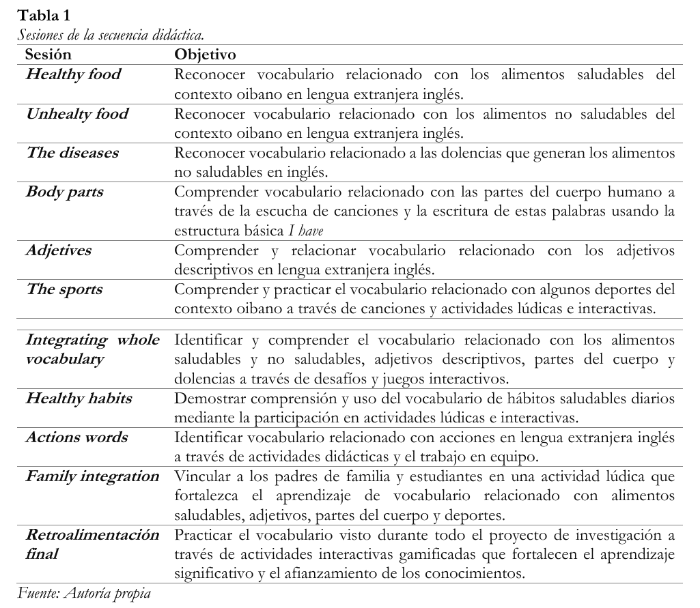
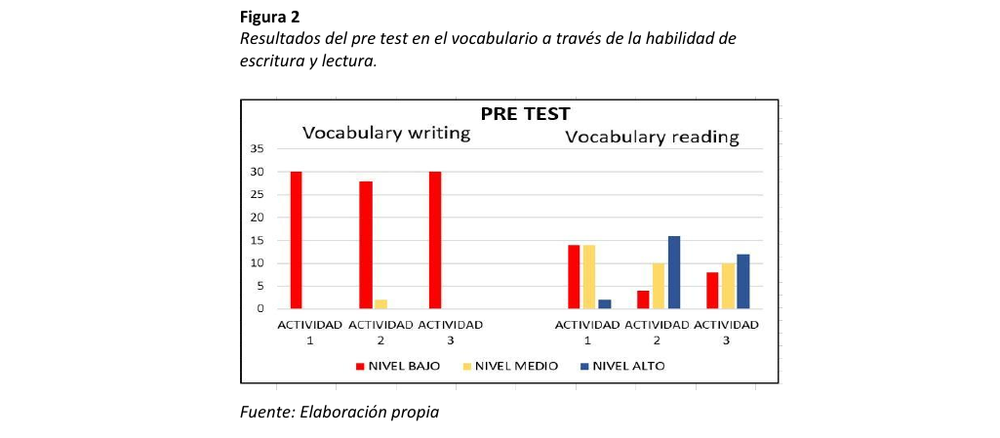
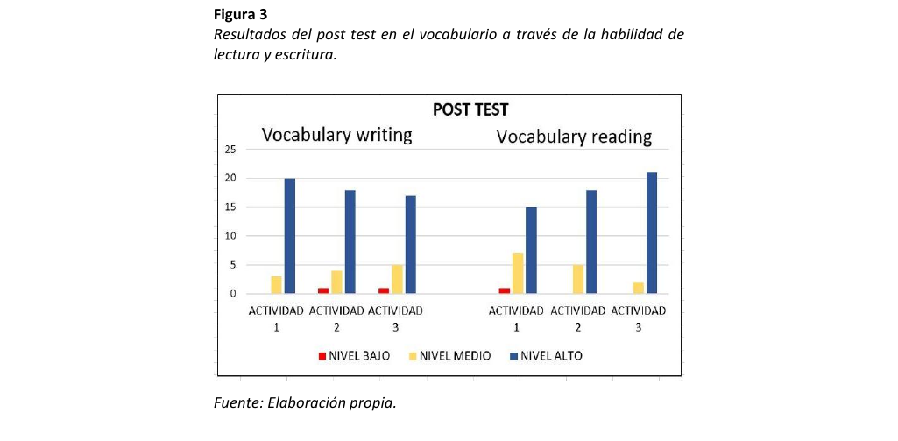
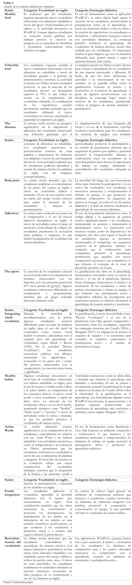

Gamificación para el fortalecimiento de vocabulario básico en inglés en estudiantes de grado segundo
Gamification for the strengthening of basic English vocabulary in second grade students
Esta investigación es el resultado de un estudio cuyo objetivo fue analizar el alcance de la gamificación como estrategia didáctica en el fortalecimiento del vocabulario básico en inglés de estudiantes de grado segundo uno de la Escuela Normal Superior Oiba. Lo anterior teniendo en cuenta la importancia del inglés como puerta de acceso a mejores oportunidades laborales y académicas; además, se destacó la relevancia del vocabulario para desarrollar competencias comunicativas. A través de las técnicas de recolección de datos, como un diagnóstico y entrevistas, se identificaron problemáticas relacionadas con el aprendizaje de vocabulario. Para abordar esta situación, se adoptó un enfoque cualitativo, basado en un paradigma socio crítico y una metodología de investigación-acción. Se diseñó una secuencia didáctica fundamentada en la gamificación, enfocándose en los estilos de vida saludable para priorizar las habilidades de lectura y escritura. El análisis de los datos evidenció la mejora en el vocabulario de los estudiantes, quienes pasaron de niveles bajos a altos en comprensión y uso de las palabras aprendidas. Los resultados destacan la efectividad de la gamificación para dinamizar los procesos de enseñanza y aprendizaje del inglés.
Palabras clave: lengua extranjera, inglés, vocabulario, estrategia didáctica, gamificación.
This research is the result of a study whose objective was to analyze the scope of gamification as a didactic strategy in strengthening the basic English vocabulary of second grade students at the Escuela Normal Superior Oiba. The above, taking into account the importance of English as a gateway to better job and academic opportunities, was considered; in addition, the relevance of vocabulary to develop communicative competencies was highlighted. Through data collection techniques, such as diagnosis and interviews, problems related to vocabulary learning were identified. To address this situation, a qualitative approach was adopted, based on a socio-critical paradigm and an action research methodology. A didactic sequence based on gamification was designed, focusing on healthy lifestyles to prioritize reading and writing skills. The data analysis evidenced the improvement in the vocabulary of the students, who went from low to high levels in comprehension and use of the words learned. The results highlight the effectiveness of gamification to dynamize the processes of teaching and learning English.
Keywords: foreign language, English, vocabulary, didactic strategy, gamification.
Introducción
El proceso de globalización ha generado cambios significativos a nivel tecnológico, político, social y en todo lo que respecta a la interacción y comunicación entre las diversidades presentes en el mundo. Considerando lo anterior, es preciso indicar que en el ámbito educativo se ha adoptado una importante perspectiva enfocada en las necesidades de los estudiantes dentro de su futuro profesional y personal que converge en una sociedad globalizada; en ese sentido, el dominio de una lengua extranjera, y específicamente el inglés, ha tomado un auge en las últimas décadas debido a su influencia positiva en el mundo (Molina-García et al, 2021, p.4).
Adicionalmente, la lengua inglesa ha adquirido relevancia y se ha convertido en uno de los principales ejes de la educación, debido a su impacto positivo en la formación integral de las personas, de allí la importancia de implementar esta enseñanza desde el inicio de la escolaridad hasta la educación superior y de ese modo, preparar a los estudiantes para los retos del siglo XXI. Adicionalmente, puede afirmarse que el inglés es el idioma de la comunicación internacional, del comercio y las finanzas, y que además, funciona como lengua franca en muchas regiones del mundo y es el idioma oficial en varias organizaciones internacionales, como la Unión Europea y la Organización de las Naciones Unidas para la Educación, la Ciencia y la Cultura (Moreno, 2020).
Teniendo en cuenta esta situación y considerando que el dominio del inglés como lengua extranjera se ha convertido en una competencia lingüística esencial para integrarse de manera efectiva en un mundo globalizado, es indispensable que la formación en este idioma se implemente de manera sólida. Además, el inglés posibilita la comunicación entre diversas culturas y sociedades, lo que refuerza la necesidad de aplicar estrategias de aprendizaje que aseguren su uso práctico en diversas situaciones (Cerda, 2018).
Ahora bien, en el contexto colombiano se evidencia que existen diferentes directrices y orientaciones por parte de las entidades responsables del sector educativo, quienes han buscado, desde hace décadas, impulsar la formación en un idioma diferente al materno, enfatizando el inglés como lengua extranjera. Sin embargo, a pesar de los diferentes esfuerzos y estrategias para aumentar la población bilingüe y elevar el nivel de dominio en esta lengua, los resultados no son los esperados. De ese modo lo demuestran las evaluaciones internacionales, como el EF English Proficiency Index (2023), donde se puede evidenciar con claridad esta situación al ubicar a Colombia en el puesto 75 de 113 países, y en el puesto 17 de 22 en Latinoamérica, dentro de un nivel bajo de dominio del inglés. Además, el acceso desigual a la educación, especialmente en este tipo de aprendizaje, es evidente en el país, donde la mayoría de los institutos que ofrecen esta formación son de carácter privado, lo que limita las oportunidades de aprendizaje y a su vez genera una disminución en el interés de las personas que esperan iniciar este proceso.
En este contexto, es fundamental destacar el papel que juega el vocabulario en el aprendizaje del inglés, ya que este se constituye como el componente esencial que permite a los estudiantes desarrollar las habilidades de lectura, escritura, comprensión auditiva y expresión oral. Sin un dominio adecuado del vocabulario, los alumnos no pueden progresar en estas habilidades de manera efectiva (Alqahtani, 2015). Sin embargo, en Colombia los métodos tradicionales de enseñanza no han logrado que los estudiantes retengan el vocabulario aprendido, lo cual repercute negativamente en su capacidad para utilizar el idioma de manera funcional (Afzal, 2019). Asimismo, la importancia del vocabulario va más allá de la memorización de palabras; por lo que los estudiantes necesitan estrategias que les permitan aplicarlo en diferentes contextos y situaciones comunicativas (Nejati, et al, 2018).
A pesar de lo anterior, es relevante indicar que en el contexto local donde se desarrolló la propuesta investigativa, que da lugar al presente artículo, todas las instituciones educativas han incorporado el inglés como lengua extranjera en su currículo, aunque persisten obstáculos en el proceso de enseñanza y aprendizaje, como la insuficiente cantidad de horas semanales dedicadas a esta asignatura. Así pues, en la Escuela Normal Superior Oiba (ENSO), también se presentan algunas dificultades a este respecto, en el nivel de básica primaria, debido a la ausencia de un docente especializado en inglés, lo que obliga a los maestros a enseñar basándose en su propia experiencia, sin tener la formación requerida en esta lengua extranjera. Asimismo, se ha observado que los alumnos presentan dificultades para retener y utilizar las palabras aprendidas, lo que afecta su rendimiento en el área y genera que el proceso de aprendizaje presente algunas falencias. En consecuencia, esta situación resalta la necesidad de implementar enfoques o estrategias innovadoras, como el uso de herramientas visuales o digitales, pues han demostrado ser efectivas en este tipo de aprendizaje (Yudha & Mandasari, 2021, Gangaiaharman & Pasupathi, 2017).
Considerando lo anterior, es relevante proponer una estrategia que permita el fortalecimiento del vocabulario en inglés en el aula, y que además despierte el interés de los estudiantes, potenciando sus procesos de aprendizaje. En ese sentido, la gamificación surge como una posibilidad pertinente, ya que, al incorporar elementos lúdicos como recompensas, puntuaciones, elementos visuales y trabajo en equipo, se puede captar la atención de los estudiantes y mejorar su receptividad. Cabrera (2019) destaca que la gamificación facilita la comprensión de la información desde un enfoque significativo, utilizando componentes recreativos que dinamizan la enseñanza y fortalecen el desarrollo afectivo, al fomentar la autonomía, el autocontrol y la autoestima de los estudiantes.
Así pues, en el proceso de búsqueda de información representativa sobre la temática de investigación, se encontraron diversos trabajos relacionados con la gamificación, los cuales aportan una perspectiva innovadora para fortalecer el proceso educativo en la enseñanza y aprendizaje de vocabulario en la lengua extranjera inglés.
De ese modo, Orihuela (2019) señala que una técnica que puede ser altamente beneficiosa para aumentar la motivación y la atención necesarias en el aprendizaje de un idioma extranjero es la gamificación, ya que se fundamenta en métodos de enseñanza basados en juegos que captan el interés de los alumnos y facilitan su aprendizaje de manera más efectiva. En este contexto, la gamificación se utiliza como una herramienta educativa, particularmente en el campo del aprendizaje de idiomas. Asimismo, incorpora elementos y técnicas propias de los juegos que pueden ser aprovechados para impulsar la enseñanza del idioma inglés de forma dinámica y estimulante (Chaves 2019, Kapp 2012).
Respecto a esta misma estrategia, González (2017) señala que la gamificación es esencial porque motiva a los estudiantes y transforma el aprendizaje en una experiencia interactiva que facilita la comprensión y retención de los contenidos en inglés; ya que al incorporar actividades lúdicas a través de aplicaciones como Duolingo y Kahoot, se crea un ambiente de aprendizaje dinámico que atrae a los estudiantes y fomenta su participación activa. Este enfoque es clave para construir una base sólida en la adquisición de una segunda lengua. De igual manera, García (2023) considera que la gamificación, al ser utilizada con elementos motivacionales como las recompensas, aumenta el interés de los estudiantes y promueve un aprendizaje más profundo y duradero.
En adición, Cantillo y Díaz (2021) destacan que la gamificación enfocada en el uso de herramientas digitales, puede ser particularmente efectiva en la enseñanza del vocabulario en inglés. También, consideran que la estructura y planificación cuidadosa de las actividades gamificadas es fundamental para mantener el interés de los estudiantes y mejorar su retención de vocabulario. Además, los autores indican que la combinación de gamificación y Tecnologías de la información y la comunicación (TIC) incrementan el aprendizaje y estimulan una actitud más positiva hacia el estudio del inglés.
Teniendo en cuenta lo expuesto anteriormente, es fundamental implementar una estrategia innovadora que responda a los intereses de los estudiantes y les permita desarrollar habilidades cognitivas y comunicativas esenciales para su futuro académico y laboral. En este sentido, la investigación se centró en analizar el alcance de la gamificación como estrategia didáctica en el fortalecimiento del vocabulario básico en inglés en los estudiantes de grado segundo uno de la ENSO. Para lograr este propósito, se establecieron objetivos específicos, como aplicar instrumentos de recolección de datos para identificar la situación problemática, implementar una secuencia didáctica centrada en la gamificación, y evaluar los resultados obtenidos y determinar el alcance de dicha estrategia en el aprendizaje de la lengua inglesa.
Referentes teóricos
Los aportes teóricos que sustentan la presente investigación se estructuraron en torno a dos ejes: El primero, relacionado con la enseñanza del inglés en Colombia y la importancia del vocabulario como base fundamental del aprendizaje en esta lengua extranjera; y el segundo, relacionado con la estrategia didáctica de gamificación, la cual fue implementada en la intervención pedagógica de la investigación.
Enseñanza del inglés en Colombia
Entre las razones que señala el Ministerio de Educación Nacional (2006) para aprender inglés se encuentra principalmente las oportunidades que se generan cuando las personas manejan una lengua extranjera, además porque el inglés se ha posicionado en el mundo como una herramienta indispensable de educación. Este idioma tiene carácter internacional y es el más difundido a nivel mundial, por lo que es un instrumento de comunicación estratégico para el desarrollo humano. Igualmente, genera que los estudiantes amplíen su perspectiva de conocimiento y comprendan el valor de las diversas culturas; permite el acceso a becas y oportunidades educativas en el exterior, así como mejores posibilidades laborales y de superación personal en diferentes ámbitos de la vida.
Vocabulario en inglés
El vocabulario son todas las palabras que una persona conoce o usa, y representa el conjunto de términos de un idioma en particular. Se trata del componente central del dominio del idioma. Aprender vocabulario es un factor indispensable en el dominio del inglés, ya que pertenece al elemento principal en el aprendizaje de una lengua extranjera; además, este se constituye como un componente fundamental que se debe adquirir cuando se quiere aprender inglés, pues facilita el dominio de las habilidades lingüísticas, a saber, hablar, escuchar, leer y escribir (Ayu & Zuraida, 2020).
El conocimiento del vocabulario a menudo se considera una herramienta esencial para los estudiantes de una segunda lengua, ya que un vocabulario limitado en este contexto impide una comunicación exitosa. En este sentido, Schmitt (2000) citado en Alqahtani (2015) subraya la importancia de la adquisición de vocabulario al enfatizar que el conocimiento léxico es central para la competencia comunicativa y para la adquisición efectiva de la lengua inglesa.
Además, el vocabulario de una lengua está formado por palabras individuales, frases o fragmentos de términos con significados específicos, por lo que en el proceso de aprendizaje del idioma inglés es esencial darle énfasis al vocabulario e implementar diferentes estrategias que contribuyan de forma positiva a que los estudiantes logren comunicarse e interactuar en esta lengua, sin una base de vocabulario suficiente, los alumnos se verán limitados al compartir sus puntos de vista, lo que a su vez puede generar apatía contra las clases y en general hacía el idioma que están aprendiendo. En ese sentido, el aspecto más importante de cualquier desarrollo lingüístico es el vocabulario (Naufal, 2018, Ambarwati, R., y Mandasari, B. 2020).
Ahora bien, Hatch y Brown (1995) citados en Cameron (2005) describen cinco pasos esenciales en el aprendizaje de vocabulario, los cuales son: en primer lugar, tener los recursos para adquirir nuevas palabras, como lo son los textos o literatura en general; el segundo es tener una imagen clara, puede ser visual o auditiva para forma estas palabras, es decir, llevarlas a un contexto. El tercer paso es aprender el significado de las palabras; el cuarto paso es hacer una conexión entre la forma y el significado de la palabra y el último es utilizar las palabras o llevarlas a la práctica en determinadas situaciones.
En esta misma línea, el aprendizaje del vocabulario inicia cuando el infante reconoce las palabras en términos de unidades, es decir, de una frase o un texto extrae una sola palabra. El niño preguntará sobre el significado o pronunciación de esa palabra en particular, la cual aprenderá a leer y así construir conocimientos y desarrollar habilidades. El rol de dichas palabras como lenguaje inician con la primera adquisición, es decir, nombrar objetos o expresar el significado de esta palabra y de esa forma los niños y niñas iniciarán un periodo de aprendizaje de vocabulario tanto como interactúan con las palabras. En ese sentido, el aprendizaje de vocabulario implica conocer el significado de una palabra y los cambios gramaticales que esta tiene y los usos que se le dan dependiendo el contexto y la intención comunicativa (Cameron, 2005).
El vocabulario, por un lado, se relaciona directamente con otras áreas del aprendizaje del inglés. Es, en efecto, un pilar esencial que los estudiantes deben manejar para avanzar en habilidades como la comprensión auditiva, la expresión oral, la lectura y la escritura. Además, para alcanzar un dominio adecuado del idioma, es fundamental que los alumnos cuenten con un repertorio amplio de palabras. Cabe destacar que el vocabulario es un componente clave de la competencia lingüística, ya que brinda la información necesaria para que los estudiantes puedan comunicarse de manera efectiva al hablar, escuchar, leer y escribir. Sin embargo, si los alumnos no poseen un vocabulario extenso ni estrategias para adquirir nuevas palabras, como aprovechar situaciones cotidianas para el aprendizaje del idioma (por ejemplo, escuchar la radio, interactuar con hablantes nativos, usar el inglés en contextos variados, leer o ver programas de televisión), dominar el inglés resultará mucho más complejo. Por último, los docentes juegan un rol significativo en este proceso, pues son quienes guían a los estudiantes hacia un aprendizaje exitoso (Ajisoko, 2020, Vu & Peters, 2021, Saleh, & Ahmed Althaqafi, 2022).
La gamificación en la educación
El término gamificación procede de la palabra anglosajona gamification, es decir, relacionado con el juego (game). Este concepto resulta un tanto moderno para muchas personas, sin embargo, este se ha implementado en el ámbito empresarial desde hace varios años. En la actualidad, la gamificación ha tenido un auge y se ha expandido a otros campos del conocimiento, incluidos el de la educación. Se han propuesto distintas definiciones para este concepto, todas compartiendo la noción de aplicar la dinámica del juego en contextos no relacionados con la lúdica.
De este modo, la Universidad Internacional de La Rioja (2021) indica que la gamificación representa una técnica pedagógica que emplea ciertos elementos propios de los juegos en entornos que no son recreativos, como ocurre en los salones de clase. Su propósito fundamental es influir en la motivación del alumno para lograr un objetivo, ya sea optimizar los resultados, mejorar el ambiente en el aula o aumentar la asistencia en las clases. Este propósito se define en función de las necesidades que aparezcan en los distintos contextos educativos y teniendo en cuenta las particularidades de los estudiantes.
Por su parte, Werbach y Hunter (2015) dividen la gamificación en tres componentes: dinámicas, mecánicas y elementos; organizándolos en una estructura piramidal que parte de lo más general (las dinámicas) hacia lo más específico (los elementos).
Nota. La imagen muestra los elementos de la gamificación, desde lo más general a lo más particular. Fuente: Werbach y Hunter (2015).
Según Werbach y Hunter (2015), las dinámicas, mecánicas y componentes forman los elementos esenciales de la gamificación. Las dinámicas abarcan la interacción de los estudiantes en el proceso, fomentando desafíos y emociones como competitividad, felicidad y curiosidad, además de destacar la progresión y las relaciones sociales que se generan. También incluyen una narrativa que, a través de un tema, escenario y personajes, mantiene la atención y emoción de los participantes. Las mecánicas, por otro lado, son las reglas y acciones que todos deben seguir, como retos, competiciones, cooperaciones, feedback, recompensas y turnos. Los componentes son las herramientas individuales que dinamizan el proyecto, tales como avatares, insignias, clasificaciones, niveles, puntos, misiones y equipos, todos ellos enfocados en visualizar logros, avanzar en el proceso y promover la colaboración.
En ese sentido, la gamificación incluye el uso de herramientas digitales como los juegos interactivos, juegos físicos y uso de aplicaciones que permiten el desarrollo de distintas actividades escolares. Es así como Pérez & Gértrudix-Barrio (2021) manifiestan que la gamificación permite el mejoramiento y fortalecimiento del proceso de enseñanza-aprendizaje, ya que esta es una estrategia efectiva para los estudiantes que viven en la era digital y que centran toda su atención en estos dispositivos. Además, al implementar la gamificación en la educación se genera que los educandos se motiven y aprendan por medio de retos, desafíos, recompensas y algunas reglas propias de los juegos.
La gamificación, según el estudio realizado por Gaitán en (2020), es una técnica educativa que utiliza elementos y mecánicas de los juegos para mejorar los resultados en el aprendizaje. Estos elementos incluyen la acumulación de puntos, la escala de niveles, la obtención de premios y la participación en misiones o retos. Al incorporar estos aspectos lúdicos en el proceso de enseñanza- aprendizaje, se busca aumentar la motivación y el compromiso de los estudiantes.
En esta misma línea, Fombona (2022) indica que uno de los principales beneficios de la gamificación es que aumenta significativamente la motivación en los estudiantes, y su implementación ha ganado aceptación en campos como el aprendizaje de idiomas, la educación física y las matemáticas (p.79). Asimismo, Barreiro (2021) sostiene que, de acuerdo con los resultados de su investigación, el uso de estrategias de gamificación en la educación influye positivamente en el ambiente de la clase y mejora la atención y el aprendizaje de los estudiantes (p.163). Dichas técnicas ayudan a establecer un entorno estimulante en el aula, donde los alumnos se sienten animados a participar activamente en actividades educativas presentadas de manera lúdica y atractiva. Esta atmósfera de juego y competencia saludable promueve la creatividad, el pensamiento crítico y la pasión por aprender, considerando los errores como oportunidades de mejora, lo que permite a los estudiantes experimentar sin temor a fallar.
Por otra parte, Parra-González et al. (2020) destacan que sus investigaciones reflejan que la mayoría de los alumnos se sienten implicados durante el proceso educativo. Este involucramiento resulta esencial, pues cuando los estudiantes participan activamente, asumen el papel principal en la construcción de su propio aprendizaje. Además, los resultados sugieren que los participantes mostraron un mayor nivel de compromiso al integrarse en el desarrollo de estas experiencias, sin detectar variaciones significativas en términos generales (p. 287).
La gamificación en la enseñanza y aprendizaje del inglés
El enfoque de gamificación en la enseñanza del inglés busca utilizar elementos de juego para captar la atención de los estudiantes, aumentar su motivación e interés en el aprendizaje. Esta metodología puede ser aplicada en cualquier materia y tiene como objetivo principal involucrar activamente a los niños en su proceso de aprendizaje. Según Casado (2016), la gamificación es especialmente efectiva en el aprendizaje de idiomas extranjeros, ya que el uso de puntos y recompensas crea un sentido de pertenencia al juego y motiva a los estudiantes a participar activamente, fomenta la interacción tanto con otros jugadores como con los elementos del juego, lo que podría llevar a los niños a comunicarse en inglés de manera similar a como lo hacen en su lengua materna.
En el contexto actual, la gamificación se ha convertido en una estrategia efectiva para mejorar la competencia en inglés. Esta metodología promueve la participación activa de los estudiantes y estimula aprendizajes significativos al incrementar la interacción en el proceso pedagógico. Al asignar un rol de jugador a cada estudiante, la gamificación mejora las experiencias de aprendizaje en la enseñanza de una segunda lengua, lo que a su vez les permite explorar y disfrutar su proceso de aprendizaje con autenticidad, autonomía e interacción con el entorno educativo. Asimismo, la gamificación es una propuesta didáctica válida para la enseñanza del inglés, ya que involucra elementos atractivos y fomenta la participación a través del aprendizaje cooperativo y la diversión. Al incorporar elementos de juego, como desafíos, recompensas y competencias, se crea un ambiente motivador que estimula el interés y la participación activa de los estudiantes (Cabrera, 2019, Mangado, 2017).
En este mismo sentido, Chaves (2019) afirma que la gamificación en la enseñanza de lenguas extranjeras estimula la participación activa de los alumnos en su aprendizaje. Esta metodología incrementa la motivación y fomenta la perseverancia entre los estudiantes. Asimismo, favorece la comunicación y el trabajo colaborativo, generando un ambiente de confianza que reduce la ansiedad y el estrés en el aula. Además, refuerza la autoestima de los estudiantes y facilita el aprendizaje mediante la aceptación de los errores.
Por otro lado, García et al. (2020) resaltan la importancia de integrar la gamificación en el contexto educativo del inglés. Esta estrategia mejora la participación, la concentración y el dominio de los contenidos. Por esta razón, es esencial que el docente establezca objetivos claros, así como estrategias y recursos que fomenten la empatía del estudiante hacia el logro de dichas metas. A su vez, Azzouz (2021) presenta hallazgos que apoyan los efectos positivos de la gamificación en la motivación de los estudiantes. Sus investigaciones indican que esta estrategia puede disminuir la preocupación relacionada con el aprendizaje de un idioma extranjero, lo cual es un aspecto clave en la adquisición de segundas lenguas. Por lo tanto, resulta claro que la implementación de estas técnicas lúdicas ayuda a aliviar la desmotivación y la frustración que los alumnos pueden experimentar al enfrentar tareas educativas. De esta manera, la gamificación se posiciona como una alternativa que favorece la creación de un entorno de aprendizaje dinámico, donde se integran el esfuerzo del docente y el uso de herramientas tecnológicas junto con una variedad de recursos didácticos.
Asimismo, Molina et al. (2021) destacan que la gamificación ha surgido como una herramienta esencial para aplicar enfoques educativos que incorporan elementos de juego. Esta estrategia facilita la creación de entornos propicios para un aprendizaje efectivo y apoya el desarrollo de competencias lingüísticas clave para el dominio del inglés. Por tanto, la gamificación se muestra como un método eficiente para fortalecer las habilidades en este idioma por medio de actividades lúdicas. Finalmente, Rojas (2022) afirma que la gamificación resulta esencial para impulsar la motivación en el aprendizaje y ejerce una influencia significativa en las habilidades comunicativas del inglés. Por otro lado, Diez- Arcón (2022) resalta que la incorporación de la gamificación en el proceso de enseñanza de lenguas extranjeras ha demostrado ser exitosa, generando efectos positivos en la conducta, el interés, la interacción y el nivel de participación de los estudiantes.
Gamificación y TIC
Veljković (2021) resalta que integrar las TIC con un enfoque de gamificación tiene efectos beneficiosos en el aprendizaje del español como lengua extranjera. Destaca aspectos clave como la experiencia educativa de los alumnos, el rol activo del docente, la calidad del material didáctico y la eficacia de los juegos interactivos en el proceso de enseñanza. De manera similar, Mendo (2021) subraya que los programas educativos respaldados por herramientas tecnológicas logran motivar significativamente a los estudiantes en la práctica de habilidades del inglés, tales como la expresión oral, la escucha, la lectura y la escritura.
En conjunto, estos autores evidencian la conexión entre la gamificación y las TIC como herramientas complementarias que mejoran el aprendizaje. Con el uso de aplicaciones, plataformas digitales y recursos tecnológicos, los estudiantes pueden perfeccionar su pronunciación, comprensión auditiva, vocabulario y gramática de una forma más dinámica. Además, la gamificación y las TIC en la enseñanza del inglés enriquecen el aprendizaje y promueven la autonomía del alumno y adaptan el proceso educativo a sus necesidades y ritmo, creando un entorno más personalizado.
Metodología
El estudio utilizó un enfoque cualitativo (Hernández-Sampieri & Mendoza 2018), y se basó en un paradigma sociocrítico (Arnal, 1992), empleando la metodología de investigación-acción (Kemmis 1989, citado por Latorre, 2005). Además, se diseñó una secuencia didáctica (Díaz-Barriga, 2013), fundamentada en la gamificación y enfocada en el fortalecimiento del vocabulario para priorizar las habilidades de lectura y escritura y de ese modo facilitar su adquisición en los estudiantes de grado segundo uno de la Escuela Normal Superior Oiba.
Paradigma de la investigación
En el caso de este trabajo, el paradigma más apropiado es el sociocrítico, que de acuerdo con Arnal (1992) se encarga de dar solución a las problemáticas existentes en las ciencias sociales y humanas, abordando especialmente el ámbito educativo y asignando un rol importante a las personas encargadas de investigar, pues estas tienen la posibilidad de interactuar y participar directamente en la realidad donde suceden los hechos de estudio, ya sea por medio de observaciones, experiencias o actividades. Asimismo, indica que la teoría crítica del paradigma pertenece a las ciencias sociales porque va más allá de las interpretaciones, de modo que sus aportes generan el estudio de grupos o comunidades e implica que los participantes tengan una relación directa.
Enfoque de la investigación
El enfoque implementado en la investigación es el cualitativo, que de acuerdo con Sandoval Casilimas (2002) aborda dos elementos fundamentales que deben ser considerados como una alternativa de reflexión durante la investigación, estos son: la subjetividad que se encuentra inmersa en la vida de las personas y la cotidianidad que hace parte del entorno donde se hace posible la comprensión de dichos aspectos que rodean a los participantes involucrados. En esa misma línea Hernandez-Sampieri & Mendoza (2018) señalan que la investigación desde la perspectiva cualitativa está encaminada al estudio de los fenómenos sociales y la relación que existe entre las personas y su contexto inmediato, cuando se selecciona este tipo de investigación es porque el objetivo principal que se plantea es conocer la manera en que cierto grupo de personas desarrollando cierta actividad o se ven involucrados en alguna problemática, indagan en profundidad sobre opiniones, interpretaciones y relaciones sociales.
Tipo de investigación
El tipo de investigación que se aplica en este trabajo es la investigación-acción, la cual involucra una indagación profunda y acción práctica dentro del contexto escolar para abordar problemáticas y posibilitar cambios o soluciones pertinentes. De ese modo, Kemmis y McTaggart (1988) citados en Latorre (2005) señalan que la investigación-acción se enfoca en el estudio autorreflexivo de las situaciones sociales y el fortalecimiento que se logra en las prácticas educativas con los docentes y estudiantes. Además, indican que este tipo de investigación se caracteriza por ser participativa y colaborativa, en donde los principales actores se unen para trabajar en pro de la mejora de las prácticas pedagógicas teniendo en cuenta que la investigación sigue una espiral de ciclos de planificación, acción, observación y reflexión.
Diseño metodológico
El diseño de la investigación que da lugar al presente artículo está sustentado por Kemmis (1989) citado en Latorre (2005), quien propone cuatro fases en el proceso de investigación-acción: planificación, acción, observación y reflexión. En la fase de planificación se identifica la problemática, se definen objetivos y se plantea una acción estratégica para solucionar el problema; en la fase de acción, se implementan las estrategias propuestas; durante la fase de observación, se recopila información sobre el desarrollo de las acciones y su impacto; finalmente, en la fase de reflexión, se analizan los datos, se evalúan los resultados y se generan nuevas ideas para mejorar las prácticas pedagógicas. Estas fases se repiten en un ciclo continuo que busca mejorar los procesos educativos mediante la identificación de nuevas problemáticas.
Técnicas e instrumentos
Teniendo en cuenta el diseño metodológico de esta investigación, se aplicaron diversas técnicas e instrumentos para recoger información valiosa durante todo el proceso; a saber: La entrevista, la observación no participante, la encuesta, la secuencia didáctica y los test.
Entrevista
Se utilizó como técnica la entrevista semiestructurada y el instrumento empleado fue un formato físico de preguntas abiertas dirigido a la docente encargada del grado segundo uno de la ENSO. Según Díaz et al. (2014), esta técnica es útil principalmente para estudios descriptivos y fases de exploración, ya que facilita el diseño de instrumentos de recolección de datos. Además, permite obtener información completa y profunda, aclarando dudas durante el proceso y garantizando respuestas útiles y verídicas Encuesta.
De acuerdo con Hernández et al. (2012), la encuesta es una técnica de búsqueda sistemática de información en la que se plantean preguntas a los investigados para obtener datos específicos, que luego se agregan y analizan. Arias (2006) la define como una técnica para recoger información de un grupo o muestra sobre ellos mismos o un tema particular.
Test
Según Marzano (2007) el test es una herramienta efectiva para medir lo que los estudiantes saben y pueden hacer, y resalta la importancia del pre test para determinar el conocimiento previo sobre un tema. En ese sentido, se emplearon tres test para evaluar el nivel de vocabulario en tres momentos del proceso; los instrumentos usados fueron los formatos impresos. El pre test permitió evaluar los conocimientos iniciales de la muestra seleccionada sobre el vocabulario en inglés, el test intermedio sirvió para monitorear el progreso durante la intervención pedagógica, y el post test ayudó a medir el aprendizaje final alcanzado tras la implementación del plan de acción.
Secuencia didáctica
De acuerdo con Díaz-Barriga (2013), la secuencia didáctica es una serie de actividades de aprendizaje ordenadas y coherentes, que consideran los conocimientos previos de los educandos para relacionarlos con el contexto y el nuevo aprendizaje. Está compuesta por tres momentos: en el Inicio, se busca crear un clima de aprendizaje agradable y motivar a los estudiantes mediante actividades concretas y dinámicas que captan su interés y los involucran en el desarrollo de los contenidos. En el Desarrollo, los alumnos interactúan con sus pre saberes y la nueva información, aplicando sus conocimientos en contextos relevantes a través de estrategias variadas como exposiciones y el uso de TIC, lo que facilita una comprensión más profunda de los contenidos. Finalmente, en el Cierre, se consolidan y reestructuran las ideas previas a la luz de lo aprendido, resolviendo preguntas y problemas relacionados, y se promueve un espacio de reflexión y diálogo que fomenta el intercambio de saberes entre ellos. Este momento también ofrece una oportunidad de evaluación tanto para el docente como para los estudiantes, permitiendo identificar dificultades y fortalezas y estableciendo compromisos para el aprendizaje futuro.
Intervención pedagógica
Para la intervención pedagógica se diseñó una secuencia didáctica, respaldada por Díaz-Barriga (2013), y titulada Gamificación en acción: Aprendiendo vocabulario en inglés con hábitos saludables (Tabla 1), el objetivo principal fue fortalecer el vocabulario básico en inglés de los estudiantes de grado segundo uno, aprovechando especialmente las habilidades de escritura y lectura para facilitar el aprendizaje, sin dejar de lado las demás habilidades comunicativas. Esta secuencia se alineó con el proyecto transversal Estilos de vida saludable del Ministerio de Educación Nacional (2020), y cada sesión trató temas que promueven una vida sana, ampliando el vocabulario relacionado y fomentando la adopción de buenos hábitos en los estudiantes. Para despertar su interés, se usó una narrativa animada donde un virus de comida no saludable afectaba el municipio de Oiba; los estudiantes, como héroes de la historia, debían resolver el problema, lo que mantuvo su atención y motivación durante todas las sesiones. Además, la aplicación de la secuencia se benefició del espacio Cultivarte, dotado de tecnología e internet, lo que permitió la realización de actividades interactivas en plataformas gamificadas como Word Wall, Class Dojo, Plickers, Quizzis, Educaplay y Kahoot; prácticas que a su vez han enriquecido la experiencia de aprendizaje.
Ahora bien, es pertinente resaltar los criterios que se tuvieron en cuenta para la selección de las plataformas mencionadas anteriormente. En ese sentido, se consideró la funcionalidad de las mismas, pues cuentan con una gama amplia de herramientas que incluyen la posibilidad de agregar imágenes y elementos interactivos como sonidos y animaciones de personajes. Además, son aplicaciones visualmente llamativas y creativas para los usuarios, en este caso los estudiantes, ya que incluyen diversas tipografías, tonalidades y elementos como tablas de clasificación, puntos, recompensas y ayudas que generan interés y agrado. De igual modo, se consideró la gratuidad de las mismas y la oportunidad de crear actividades desde cero, teniendo en cuenta los objetivos de cada sesión, la edad de los estudiantes, sus intereses y la adaptación al contexto. En adición, se tuvo en cuenta la utilidad de las actividades creadas para las clases y grados posteriores, pues el docente cooperador y los padres de familia podrán utilizarlas como herramientas de apoyo para reforzar el aprendizaje en casa y en la escuela.

Nota: La tabla muestra las sesiones implementadas en la secuencia didáctica y el objetivo de cada una.
Contexto y participantes
La Escuela Normal Superior Oiba se encuentra localizada en el casco urbano del mismo municipio, actualmente brinda el servicio educativo a estudiantes de básica primaria, secundaria, educación media y el Programa de Formación Complementaria.
Para el desarrollo de la propuesta se ha seleccionado como población a los 65 estudiantes del grado segundo de la ENSO, sus edades oscilan entre los 6 y 8 años y están divididos en tres subgrupos. Así pues, la muestra seleccionada son los estudiantes del curso segundo uno que cuenta con un total de 23 educandos, 13 niñas y 10 niños, el 76 % de estos pertenece al sector urbano del municipio y el 24 % restante al sector rural.
Procedimiento de análisis y resultados
Para el análisis de datos de la investigación que da lugar al presente artículo, se establecieron dos categorías, las cuales a su vez se dividen en dos subcategorías. La primera categoría es Vocabulario en inglés, que se compone del Nivel de vocabulario inicial y del Nivel de vocabulario final. La segunda es Estrategia didáctica e incluye la Secuencia didáctica y la Gamificación
Vocabulario en inglés
Nivel inicial de vocabulario

Nota: La figura muestra los resultados obtenidos en las actividades que evaluaban el vocabulario a través de la habilidad de escritura y lectura.
Para determinar el nivel inicial de vocabulario de los estudiantes de grado segundo uno se aplicó un Pre test, este se dividió en dos partes: La primera parte se enfocó en evaluar el vocabulario a través de la habilidad de escritura y constó de 3 actividades. La segunda parte buscó evaluar el vocabulario mediante la habilidad de lectura y constó de 3 actividades; cada una de las partes se compuso de 30 palabras para un total de 60 palabras a evaluar en la prueba diagnóstica. Asimismo, el vocabulario fue evaluado mediante la adaptación de la rúbrica propuesta por la International Association Reading (2023) quien establece evaluarlo a partir de tres niveles: Nivel alto, medio y bajo. Teniendo en cuenta esta rúbrica se hicieron los ajustes y adaptaciones pertinentes de acuerdo al número de palabras a valorar en el grado y considerando el nivel de desarrollo cognitivo en estas edades. En este análisis se pudo determinar que el nivel de vocabulario de los estudiantes era bajo en la mayoría de las actividades; especialmente en la habilidad de escritura como se puede evidenciar en la figura 2.
Ahora bien, se resalta que esta prueba fue diseñada bajo dos de las cinco habilidades propuestas en los Estándares Básicos de Competencias del área (2006), ya que se propuso contrastar la habilidad de escritura y lectura, evidenciando que la primera presentó mayor dificultad. En ese sentido, es preciso indicar que las habilidades de habla y escucha se desarrollan en mayor proporción desde el grado preescolar y primero, por lo que no se valoran en la prueba, sin embargo, estas sí se tuvieron en cuenta en las secuencias didácticas, ya que no se desconoce su importancia para el aprendizaje del inglés y específicamente del vocabulario.
De otro lado, a partir de la prueba aplicada se evidencia que la habilidad escrita presenta dificultades en los estudiantes, pero esto no indica que la totalidad de ellos desconozcan el vocabulario. Se tiene presente que esta habilidad se verá con mayor énfasis tanto en las intervenciones como en grados posteriores y en las pruebas nacionales que evalúan el dominio del inglés. De igual manera, se ha logrado identificar y analizar el nivel de vocabulario actual en los estudiantes de grado segundo uno, gracias a esto se ha determinado el punto de partida para planificar y ejecutar una secuencia didáctica enfocada en el fortalecimiento de vocabulario básico en inglés a través de las habilidades de lectura y escritura como facilitadores de este proceso de aprendizaje e implementando la gamificación como estrategia didáctica.
Adicionalmente, en la entrevista realizada al docente cooperador antes de iniciar con la intervención pedagógica, se resalta la respuesta dada en la pregunta 3 y 4:
¿Cuál es el nivel de vocabulario que tienen los estudiantes en este momento?
Sobre lo que ellos manejan, la verdad lo más básico, es decir lo que uno les puede ir enseñando poco a poco, pero la verdad muy basiquito todo.
¿Considera que es importante el aprendizaje de vocabulario en el inglés?
“Bueno, claro el vocabulario es muy importante porque con el pueden aprender más fácil, expresarse mejor y tener una base para este aprendizaje”
De acuerdo con lo expresado por el docente cooperador en la entrevista, se puede decir que el nivel de vocabulario de los estudiantes de grado segundo en el momento inicial de la investigación era bastante básico y limitado a lo enseñado en las clases, de modo que resalta la importancia de fortalecer el vocabulario como base fundamental del aprendizaje de la lengua inglesa, especialmente en edades tempranas, como lo es el caso de los estudiantes de dicho grado que oscilan entre las edades de 6 y 7 años.
En ese sentido, la aplicación de estas dos técnicas e instrumentos permitió determinar que, en efecto, los estudiantes de grado segundo uno se encontraban en un nivel bajo o básico de dominio de vocabulario. A partir de lo anterior, se diseñó e implementó la secuencia didáctica enfocada en el fortalecimiento del vocabulario básico en inglés, mejorando también la habilidad de escritura y lectura, ya que en el pre test se evidenciaron dificultades al respecto.
Nivel final de vocabulario

Nota: La figura muestra los resultados obtenidos en las actividades que evaluaban el vocabulario a través de la habilidad de lectura y escritura en el post test.
Tras la implementación de la secuencia didáctica basada en la gamificación como estrategia didáctica, el nivel final de vocabulario se pudo determinar mediante la aplicación del post test, prueba que permitió evidenciar los avances significativos de los estudiantes en cada una de las actividades y en las habilidades de lectura y escritura; donde se pudo preciasr que la mayoría de los alumnos se ubicó en el nivel alto de dominio de vocabulario de la lengua inglesa; mientras que una minoría se encontró en el nivel medio y tan solo un estudiante quedó en el nivel bajo, como se puede observar en el gráfico 3.
Teniendo en cuenta lo anterior, es preciso señalar que los resultados obtenidos en el post test fueron altamente favorables, ya que demuestran que la mayoría de los estudiantes tienen un nivel alto de dominio de vocabulario y tan solo una minoría se encuentra en el nivel bajo, disminuyendo considerablemente y casi que en su totalidad los niveles bajos. En ese sentido, se puede decir que la estrategia de gamificación implementada en el grado segundo uno permitió contrarrestar las problemáticas evidenciadas y fortalecer vocabulario básico en la lengua inglesa.
Asimismo, es importante resaltar que, en la entrevista realizada al docente cooperador luego de la implementación de la secuencia didáctica, se evidencia desde su percepción el avance que tuvieron los estudiantes en el aprendizaje de vocabulario. De ese modo, se destaca la respuesta dada en la pregunta 4 y 5: ¿Cree que los estudiantes avanzaron en su nivel de vocabulario tras la implementación de la propuesta investigativa? ¿Cómo lo pudo evidenciar?
“Por supuesto que los niños avanzaron en el nivel de vocabulario eso se evidencio en las diversas evaluaciones creativas que la estudiante implementó a través de las TIC y eso permitió que los estudiantes demostraran su conocimiento” ¿Qué comparación puede hacer entre el nivel inicial de vocabulario en los estudiantes y el nivel final de vocabulario?
“Bueno los estudiantes antes de empezar a trabajar pues tenían un vocabulario muy escaso para el nivel en el que estaban y gracias al proyecto los niños aprendieron nuevas palabras en inglés a escribirlas a pronunciarlas entonces si se puede decir que hubo un progreso en el aprendizaje respecto al inglés en los estudiantes del grado segundo uno.”
Asimismo, en la encuesta realizada a los padres de familia del grado segundo uno se puede resaltar que desde su punto de vista, los estudiantes sí avanzaron en el nivel de vocabulario relacionado con los estilos de vida saludable, y además evidencian mayor gusto por las clases y por el aprendizaje de nuevas palabras.
Teniendo en cuenta lo anterior, es preciso indicar que los estudiantes alcanzaron un nivel alto de dominio de vocabulario en la lengua extranjera inglés, lo cual se complementa con lo propuesto por Naufal (2018), quien señala que el vocabulario de una lengua está formado por palabras individuales, frases o fragmentos de términos con significados específicos, por lo que en el proceso de aprendizaje del idioma inglés es esencial darle énfasis al vocabulario e implementar diferentes estrategias que contribuyan de forma positiva a que los estudiantes logren comunicarse e interactuar en esta lengua, sin una base de vocabulario suficiente, los alumnos se verán limitados a compartir sus puntos de vista, lo que a su vez puede generar apatía contra las clases y en general hacía el idioma que están aprendiendo. En ese sentido, el aspecto más importante de cualquier desarrollo lingüístico es el vocabulario.
Estrategia didáctica
La segunda categoría de análisis es Estrategia didáctica; la cual se encuentra dividida en dos subcategorías que responden a la estructura y el enfoque implementando en la intervención pedagógica, estas son: Secuencia didáctica y Gamificación.
Secuencia didáctica
Para la intervención pedagógica se aptó por implementar la secuencia didáctica respaldada por Diaz Barriga (2013), ya que permite estructurar y organizar de forma lógica los contenidos a trabajar, además posibilita la construcción de conocimientos a partir de los pre saberes de los estudiantes, la motivación, la retroalimentación y la evaluación formativa. En ese sentido, cada sesión estuvo estructurada bajo este concepto y permitió que los contenidos fueran presentados de manera coherente y progresiva, asegurando así que los estudiantes participaran activamente en su propio proceso de aprendizaje, consolidando habilidades y conocimientos a través de actividades interactivas y reflexivas.
Gamificación
La gamificación como estrategia didáctica implementada a través de diferentes herramientas digitales y actividades analógicas, potenció el aprendizaje y fortalecimiento de vocabulario de manera significativa al generar un ambiente de interés y emoción entre los estudiantes. La relación entre gamificación y TIC permitieron crear una dinámica donde los alumnos se sintieron motivados y comprometidos con las actividades, incentivados por la asignación de puntos y recompensas, lo que promovió una participación constante y entusiasta.
La estrategia fomentó la interacción entre los estudiantes y facilitó la consolidación de nuevo vocabulario. Asimismo, el refuerzo continuo de los conceptos, apoyados por el uso de herramientas digitales, crearon un entorno propicio para el aprendizaje significativo. En conjunto, estas estrategias de gamificación contribuyeron a que el proceso de aprendizaje fuera más dinámico y efectivo, manteniendo la atención de los estudiantes en cada sesión y brindándoles la oportunidad de participar activamente, teniendo en cuenta sus gustos e intereses.
Específicamente, la estrategia didáctica se centró en el uso de herramientas y actividades que captaron la atención de los estudiantes, promoviendo la participación activa en el aprendizaje. El uso de aplicaciones interactivas como WordWall, Quizizz, ClassDojo, Plickers, Educaplay y Kahoot permitió hacer las actividades más atractivas y motivadoras. Además, se emplearon recursos visuales y tecnológicos como diapositivas, imágenes y códigos digitales para mantener la atención y facilitar la comprensión de los contenidos. Además, la secuencia didáctica estuvo directamente relacionada con el proyecto transversal "Estilos de vida saludable", propuesto por el Ministerio de Educación Nacional e implementado en la Escuela Normal Superior Oiba. Se buscó abordar en cada sesión un tema relacionado con la promoción de vida saludable, fortaleciendo el vocabulario asociado a la temática y promoviendo en los estudiantes la práctica de buenos hábitos en su vida diaria.
Dentro de los elementos lúdicos destacaron juegos y dinámicas como la ruleta digital, el bingo, la carrera de relevos y charadas, que hicieron el aprendizaje más dinámico y entretenido. La narrativa y el uso de puntos y recompensas incentivaron la participación y la motivación de los estudiantes, creando un ambiente de mayor entusiasmo. En la intervención pedagógica, la narrativa se basó en una historia animada en video donde un virus de comida no saludable atacaba el municipio de Oiba, y los superhéroes del grado segundo uno de la Escuela Normal debían salvar a la comunidad. Esto mantuvo su atención y motivación durante todas las sesiones.
Asimismo, el fomento del trabajo en equipo se reflejó en actividades que promovieron la colaboración, permitiendo que los estudiantes se apoyaran mutuamente y reforzando conceptos como la zona de desarrollo próximo. La creación de equipos con nombres personalizados y la asignación de roles en la herramienta Class Dojo fomentaron un sentido de pertenencia y compromiso en las tareas realizadas. Respecto al proceso de evaluación, se utilizaron herramientas como Plickers y actividades competitivas, permitiendo evaluar el progreso de los estudiantes de forma entretenida y diferente.
Finalmente, es relevante mencionar que la aplicación de la secuencia didáctica se realizó en "Cultivarte", un espacio cercano a la escuela que cuenta con tecnología y acceso a internet, donde se llevaron a cabo las actividades interactivas en las plataformas gamificadas mencionadas; lo que permitió generar en los estudiantes interés y mayor gusto en el desarrollo de las diferentes actividades.
Por otro lado, es importante resaltar que en la entrevista realizada al docente cooperador se buscó conocer su percepción sobre la estrategia implementada, donde se puede resaltar lo siguiente: ¿Qué opina de la estrategia didáctica implementada en el proyecto investigativo para fortalecer el vocabulario en inglés de los estudiantes?
“Fue una estrategia muy bien orientada porque, bueno, busca que los estudiantes aprendan jugando y con el uso de las TIC, entonces apunta a los lineamientos educativos actuales que buscan vincular la tecnología y que, pues los niños aprendan jugando, fue muy bonita se evidencio el trabajo que fue ordenado organizado y sistematizado.” ¿En qué medida considera que la gamificación fue útil para fortalecer el vocabulario en inglés en los estudiantes?
“Fue útil para fortalecer el vocabulario de los estudiantes porque los involucró en juegos, aspecto que los niños de esa edad del grado segundo valoran mucho ellos quisieran a toda hora estar en ese tipo de actividades y eso fue lo que le dio un poco más de interés a los niños que participaron en juegos online, evaluaciones online, entonces fue un trabajo bastante motivante y agradable para ellos.”
A partir de la información anterior y de acuerdo a la categoría de análisis, se puede decir que la estrategia implementada permitió que los estudiantes aprendieran de forma divertida y dinámica. En cuanto a la utilidad de la gamificación, esta fue efectiva para involucrar a los estudiantes en actividades lúdicas, aspecto que es de gran valor para su edad. El uso de juegos online y evaluaciones interactivas contribuyó a generar un ambiente motivador y agradable, lo que fomentó la participación y el interés de los niños.
De igual modo, en la encuesta realizada a los padres de familia luego de la implementación de la secuencia didáctica se buscó conocer sus opiniones frente a las actividades realizadas y el progreso de sus hijos en el aprendizaje de vocabulario en inglés. Entre las respuestas obtenidas se resalta que la estrategia fue realmente efectiva, pues integró actividades lúdicas que mantuvieron el interés y entusiasmo en cada una de las sesiones. Además, fue una estrategia innovadora que captó la atención de los alumnos y contribuyó de forma significativa en el fortalecimiento de vocabulario básico en inglés.
Considerando lo anterior, es preciso señalar que la estrategia de gamificación fue realmente efectiva y tuvo alcance alto en el fortalecimiento de vocabulario en inglés; pues aportó avances significativos y mantuvo el interés de los estudiantes en cada una de las sesiones, lo cual es evidenciado en el apartado de la descripción de cada sesión y en los resultados del Post test aplicado. Así pues, es importante relacionar los hallazgos con dos autores que han realizado investigaciones importantes sobre el uso de esta estrategia en el aula de clase. En primer lugar, García (2018) explica que los hallazgos de su investigación muestran cómo las estrategias de gamificación mejoran la enseñanza y aprendizaje del inglés como lengua extranjera, pues favorecen un rendimiento académico superior y aumentan la motivación de los alumnos significativamente, lo que permite evidenciar una actitud más positiva hacia las actividades propuestas por el docente y una mayor asimilación de los contenidos de la clase; además, al planear y ejecutar las actividades teniendo en cuenta el contexto, los intereses y las necesidades de los estudiantes, esta estrategia puede facilitar el aprendizaje, generando que este proceso sea más dinámico y agradable.
De manera similar, Caraballo (2023) destaca la conexión beneficiosa entre la gamificación y las tecnologías de la información y la comunicación, señalando que mediante aplicaciones, plataformas en línea y herramientas virtuales, los alumnos pueden mejorar en, comprensión auditiva, pronunciación, vocabulario y gramática de forma más activa y divertida. Así pues, la relación directa entre gamificación y tecnología digital en la enseñanza y aprendizaje de esta lengua extranjera, genera que el aprendizaje sea más atractivo, reflexivo y construido a partir de las características de los estudiantes y del contexto donde se encuentran, ya que fomenta la autonomía, se adapta a diversas necesidades y tiene en cuenta el ritmo de aprendizaje de cada alumno.
Por último, es pertinente resaltar que en la tabla 2 se evidencia un análisis de cada una de las sesiones de la secuencia didáctica a partir de las dos categorías de análisis establecidas en la investigación. Así pues, se presentan los hallazgos más relevantes relacionados con el vocabulario en inglés y la gamificación como estrategia didáctica.

Categoría: Estrategia didáctica La carrera de relevos logró generar un ambiente de competencia amistosa que mantuvo a estudiantes y padres motivados.
La dinámica de relacionar imágenes con palabras promovió la cooperación y comunicación en equipo, lo que permitió reforzar el vocabulario de manera lúdica.
Las aplicaciones WordWall y Quizizz fueron clave para mantener el interés y motivación de los estudiantes. La dinámica de competencia sana y los puntos obtenidos reforzaron su compromiso con el aprendizaje, creando un ambiente de entusiasmo y participación activa. Nota: La tabla muestra las sesiones de la secuencia didáctica y su análisis a partir de las categorías: Vocabulario en inglés y Estrategia didáctica.
Discusión y conclusiones
En primer lugar, se concluyó que la estrategia didáctica enfocada en la gamificación contribuyó significativamente en el fortalecimiento del vocabulario básico en inglés, ya que promovió en los estudiantes mayor interés y motivación en el desarrollo de las actividades; además, se evidenció un aumento en el gusto por las clases de inglés. La gamificación, al integrar diferentes elementos del juego en el contexto educativo, permitió generar un ambiente propicio para el fortalecimiento y aprendizaje de vocabulario relacionado con los estilos de vida saludable, teniendo en cuenta los intereses de los estudiantes y las necesidades de su entorno. La correcta implementación de esta estrategia se evidenció en la planificación de las sesiones, el uso de herramientas digitales interactivas y la incorporación de una narrativa que vinculaba las actividades a situaciones reales. Asimismo, se realizó un monitoreo constante para ajustar las actividades en función del desempeño de losestudiantes, lo cual permitió optimizar los resultados obtenidos y mejorar el proceso de enseñanza aprendizaje en el aula.
En segundo lugar, con la implementación de la secuencia didáctica se fortaleció el vocabulario básico en inglés en los estudiantes de grado segundo uno, aumentando considerablemente el nivel alto; donde la gran parte de los alumnos logró ubicarse allí. Además, se redujeron casi que en su totalidad los niveles bajo y tan solo una minoría de los alumnos se encontró en el nivel medio de dominio del vocabulario básico en la lengua inglesa. A partir de estos resultados, se resalta que el progreso durante cada una de las sesiones fue evidente y positivo, lo cual además se reafirma en los resultados de la prueba final y las respuestas dadas por el docente cooperador y los padres de familia en los instrumentos aplicados.
En tercer lugar, es preciso mencionar que la estructura de la secuencia didáctica implementada permitió una organización lógica de las actividades propuestas, lo que a su vez generó que estas se desarrollaran satisfactoriamente, atendiendo a los intereses, contexto, ritmos de aprendizaje y saberes previos de los estudiantes. De igual modo, la relación entre la gamificación y las tecnologías de la información y la comunicación posibilitaron que los estudiantes fortalecieran las habilidades tecnológicas y el trabajo en equipo. En general, se puede decir que la investigación que da lugar al presente artículo obtuvo resultados positivos, pues la gamificación tuvo un alcance alto en el fortalecimiento de vocabulario básico en inglés.
Finalmente, es preciso recomendar que se replanteen las estrategias de enseñanza en inglés dentro del nivel de básica primaria en la institución educativa, lo que implica revisar y actualizar los métodos y técnicas utilizadas para asegurar que los estudiantes reciban una formación más efectiva y adaptada a sus necesidades e intereses. Un cambio en las estrategias puede incluir la integración de recursos tecnológicos, dinámicas de gamificación o actividades que refuercen la participación activa de los estudiantes en el proceso de aprendizaje. Asimismo, es fundamental continuar con la implementación de la presente estrategia didáctica para fortalecer el aprendizaje del inglés, ya que la continuidad garantiza que los estudiantes sigan desarrollando sus habilidades lingüísticas de manera progresiva y sólida. Por último, es importante implementar proyectos transversales para la enseñanza del inglés, ya que integran el aprendizaje de diferentes temas y áreas, ofreciendo una experiencia educativa conectada con la realidad contextual de los estudiantes.
Implicaciones éticas
El presente estudio contó con la aprobación del comité de investigación de la Escuela Normal Superior Oiba.
Contribución de los autores edición.
Declaración de fuentes de financiación
La autora declara que este estudio fue autofinanciado.
Conflictos de interés
La autora declara no tener conflictos de interés.
Referencias
Afzal, N. (2019). A study on vocabulary-learning problems encountered by BA English majors at the university level of education. Arab World English Journal,10(3): 81–98. doi:10.24093/awej/vol10no3.6
Ajisoko, P. (2020). The Use of Duolingo Apps to Improve English Vocabulary Learning. International Journal of Emerging Technologies in Learning (iJET), 15(07), pp. 149–155. https://doi.org/10.3991/ijet.v15i07.13229
Alqahtani, M. (2015). The importance of vocabulary in language learningand how to be taught. International Journal of Teaching and Education, 3(3): 21–34. doi:10.20472/te.2015.3.3.002.
Ambarwati, R., y Mandasari, B. (2020). The influence of the Cambridge online dictionary on students' pronunciation and vocabulary proficiency. Journal of English Language Teaching and Learning, 1(2), 50-55.
Arnal, J. (1992). Investigación educativa. Fundamentos y metodología. Barcelona (España): Labor
Ayu, M., & Zuraida, Z. (2020). Enhancing Descriptive Paragraph Writing Of Secondary Students through Shared Writing. Journal of Research on Language Education, 1(1).
Azzouz Boudadi, N. (2021). Gamification in learning English as a second language: A methodological framework to improve psychobehavioural factors and speaking fluency. Tesis doctoral. Universitat d'Andorra
Barreiro Yáñez, M. (2021). Evaluación de una estrategia educativa basada en gamificación en el clima de aula, en la atención selectiva y aprendizaje. Tesis doctoral. Universidad UMECIT
Cabrera Montero, L. (2019). Gamificación como estrategia didáctica para la enseñanza– aprendizaje del Inglés en el grado transición del colegio Nuestra Señora del Carmen. [Tesis de pregrado, Corporación Universitaria Iberoamericana Villavicencio, Meta]. Repositorio Ibero. https://repositorio.ibero.edu.co/entities/publication/52c6e565-fe14-4dc3-bbe1- 3e473c26f38c
Cameron, L. (2005). Teaching Languages to Young Learners. (8 ed.). Cambridge University
Cantillo Lozano, M., Diaz Pardo, C. (2021). Estrategia de Gamificación Para la Enseñanza de Vocabulario en Inglés en el Grado Tercero de Primaria. [Tesis de maestría, Universidad de Santander] Repositorio Digital Universidad de Santander UDES. https://repositorio.udes.edu.co/handle/001/6481
Caraballo Padilla, Y. Y. (2023). Gamificación educativa y su impacto en la enseñanza y aprendizaje del idioma inglés: un análisis de la literatura científica. Ciencia Latina Revista Científica Multidisciplinar, 7(4), 1813-1830. https://doi.org/10.37811/cl_rcm.v7i4.7011
Casado Ramos, M. (2016). La gamificación en la enseñanza del inglés en Educación Primaria. [Tesis de grado, Universidad de Valladolid]. Repositorio documental Universidad de Valladolid. https://uvadoc.uva.es/handle/10324/18538
Cerda, G. (2018). La gamificación como estrategia correctiva para la interferencia sintáctico morfológica del español en la producción escrita del idioma inglés de los estudiantes de nivel pre-intermedio del Programa de Suficiencia en la Universidad de las Fuerzas Armadas. Universidad Central del Ecuador. Trabajo de Mestría, pp. 220.
Chaves Yuste, B. (2019). Revisión de experiencias de gamificación en la enseñanza de lenguas extranjeras. ReiDoCrea, 8, 422-430
Díaz SanJuan, L. (2011). La observación. Facultad de Psicología. Universidad Nacional Autónoma de México.
Diaz-Barriga, Á. (2013). Guía para la elaboración de una secuencia didáctica. Universidad Nacional Autónoma de México.
Díaz-Bravo, L., Torruco-García, U., Martínez-Hernández, M., & Varela-Ruiz, M. (2014). La entrevista, recurso flexible y dinámico. Investigación en Educación Médica, 2(7), 162-167.
Díez-Arcón, P. (2022). Experiencias gamificadas en lengua extranjera: revisión sistemática de las aulas de primaria. Escuela Internacional de Doctorado, Universidad Nacional de Educación a Distancia.
EF English Proficiency Index.(2023). A Ranking of 113 countries and Regions by English Skills. Educations First. http://www.ef.com/epi
Fombona, J. (2022). Análisis de investigaciones sobre gamificación en educación primaria. Universidad de Oviedo. España
Gaitán, V. (2020). Gamificación: el aprendizaje divertido. https://www.educativa.com/blog- articulos/gamificacion-el-aprendizaje-divertido/
Gangaiamaran, R. & Pasupathi, M. (2017). Review on the use of mobile apps for language learning. International Journal of Applied Engineering Research.12(21): 11242–11251.
García Gaitero, F., García Gaitero, Ó., & Martín Martín, M. (2018). La gamificación como recurso para la mejora del aprendizaje del Inglés en educación primaria [Gamification as a resource for improving English learning in primary education]. Red de Investigación sobre Liderazgo y Mejora de la Educación (RILME).
García García, A. (2023). La gamificación como estrategia para el aprendizaje de vocabulario del medio ambiente en el idioma inglés en estudiantes de quinto grado de una institución privada. [Tesis de grado, Universidad La Gran Colombia]. Repositorio Institucional- Universidad La Gran Colombia. http://hdl.handle.net/11396/7800
García-Cárdenas, M.-D.-C., García-Herrera, D. G., Cárdenas-Cordero, N. M., Erazo-Álvarez, J. C. (2020). Gamificación como estrategia innovadora en la enseñanza del Inglés [Gamification as an innovative strategy in the teaching of English].Episteme Koinonia, Revista Electrónica de Ciencias de la Educación, Humanidades, Artes y Bellas Artes, 3(1), 163. Fundación Koinonia (F.K), Santa Ana de Coro, Venezuela http://dx.doi.org/10.35381/e.k.v3i1.997
González Alonso, D. (2017). La gamificación como elemento motivador en la enseñanza de una segunda lengua en educación primaria. [Tesis de grado, Universidad de Burgos]. Repositorio Institucional Riubu. http://hdl.handle.net/10259/4674
Hernández, E. (2014). El B-learning como estrategia metodológica para mejorar el proceso de enseñanza-aprendizaje de los estudiantes de inglés de la modalidad semipresencial del departamento especializado de idiomas de la Universidad Técnica de Ambato . Departamento de Didáctica y Organización Escolar, Facultad de Educación, Universidad Complutense de Madrid. España.
Hernandez, G. Lugo, C. y Montijo, E. (2012). El cuestionario de estilos de aprendizaje CHAEA y la escala de estrategias de aprendizaje ACRA como herramienta potencial para la tutoría académica. Revista de Estilos de Aprendizaje, 5(10).
Hernández-Sampieri, R., & Mendoza, C. (2018). Metodología de la investigación. Las rutas cuantitativa, cualitativa y mixta. Journal of Research on Language Education, 1(1).
Kapp, K. (2012). The Gamification of Learning and Instruction: Game-based Methods and Strategies for Training and Education. John Wiley & Sons.
Latorre, A. (2005). La investigación-acción. Conocer y cambiar la práctica educativa. Editorial Graó.
Mangado, F. (2017). Proyectos y Competencias. Málaga, España: Recolectores Urbanos Editorial.
Marzano, R. & Kendall, J. (2007). The new taxonomy of educational objectives (2nded.). Corwin Press.
Mendo Flores, A. J. (2021) Uso de las TIC para el Aprendizaje del idioma Inglés en estudiantes de educación básica. (Tesis doctoral). Universidad Cesar Vallejo. Tujillo Perú-
Ministerio de Educación Nacional de Colombia. (2020). Estilos de vida saludables: Módulo conceptual. Colombia Aprende. https://www.colombiaaprende.edu.co/sites/default/files/files_public/2021- 07/M%C3%B3dulo%20conceptual%20EVS.pdf
Ministerio de Educación Nacional. (2006, diciembre 20). Estándares de Competencias en Lenguas Extranjeras: Inglés, SERIEGUÍAS No 22. Cloudfront.net. https://d3j4pzt8k2yqfj.cloudfront.net/s3fs-public/2022- 07/estandares_basicos_competencia_en_lenguas_extranjeras_ingles-min.pdf
Molina-García, P. F., Molina-García, A. R., & Gentry-Jones, J. (2021). La gamificación como estrategia didáctica para el aprendizaje del idioma inglés [Gamification as a didactic strategy for learning the English language]. Revista Cientifica Dominio de las Ciencias, 7(1), 722-730. DOI: http://dx.doi.org/10.23857/dc.v7i1.1672
Moreno Agurto, V. A. (2020). La importancia de la enseñanza del idioma inglés en la etapa escolar. Alétheia, 8(1), 41–52. https://doi.org/10.33539/aletheia.2020.n8.2422
National Council of Teachers of English. (2010). Vocabulary Rubrics. International Reading Association.
Naufal, Maulana Wildan Mastery, V., & Study, A. C. (2018). Students’ Habit In Singing English Pop Songs And Their Vocabulary Mastery: A Correlational Study
Nejati, E. & Jahangiri, A. (2018). The effect of using computer-assisted language learning (CALL) on Iranian EFL learners’ vocabulary learning:An experimental study. Cypriot Journal of Educational Sciences, 13(2): 113–124. https://doi:10.18844/cjes.v13i2.752
Orihuela, P. (2019). La gamificación como estrategia de enseñanza en docentes de inglés para fomentar el desarrollo de habilidades orales y escritas en alumnos de 9 a 12 años de un instituto de idiomas de Lima. Pontificia Universidad Católica del Perú. Trabajo de titulación.
Parra-González, M. E., Segura-Robles, A., Vázquez Cano, E., & López-Meneses, E. (2020). Gamificación para fomentar la activación del alumnado en su aprendizaje [Gamification to improve student activation in learning]. Revista Linguagem e Tecnologia, 13(3),278-293
Pérez Gallardo, E., & Gértrudix-Barrio, F. (2021). Ventajas de la gamificación en el ámbito de la educación formal en España. Una revisión bibliográfica en el periodo de 2015-2020. Contextos Educativos. Revista De Educación, (28), 203–227. DOI: https://doi.org/10.18172/con.4741
Rojas Camacho, Y. E. (2022). La gamificación en la competencia comunicativa del inglés en estudiantes de educación básica alternativa ATE 2021. Universidad Cesar Vallejo, Lima, Perú.
Saleh, A. M., & Ahmed Althaqafi, A. S. (2022). The Effect of Using Educational Games as a Tool in Teaching English Vocabulary to Arab Young Children: A Quasi-Experimental Study in a Kindergarten School in Saudi Arabia. Sage Open, 12(1). https://doi.org/10.1177/21582440221079806
Sandoval Casilimas, C. A. (2002). Investigación cualitativa. Bogotá: ARFO Editores e Impresores Ltda
Universidad Internacional de la Rioja. (2022). Creación de contenidos, Mobile learning y Gamificación en el aula. Tema 6: Gamificación. UNIR
Veljković Michos, M. (2021). La innovación y las nuevas tecnologías en el aula de ELE:gamificación y TIC (Tesis doctoral). Universidad de Salamanca. Departamento de Lengua Española, Facultad de Filología.
Vu, D.V.; Peters, E. (2021). Vocabulary in English Language Learning, Teaching, and Testing in Vietnam: A Review. Educ. Sci, 11, 563. https://doi.org/10.3390/educsci11090563
Werbach, K., & Hunter, D. (2015). The gamification toolkit: dynamics, mechanics, and components for the win. University of Pennsylvania Press.
Yudha, H. T. & Mandasari, B. (2021). The Analysis of Game Usage for Senior High School Students to Improve Their Vocabulary Mastery. Journal of English Language Teaching and Learning, 2(2), 74-79. DOI: https://doi.org/10.33365/jeltl.v2i2.13